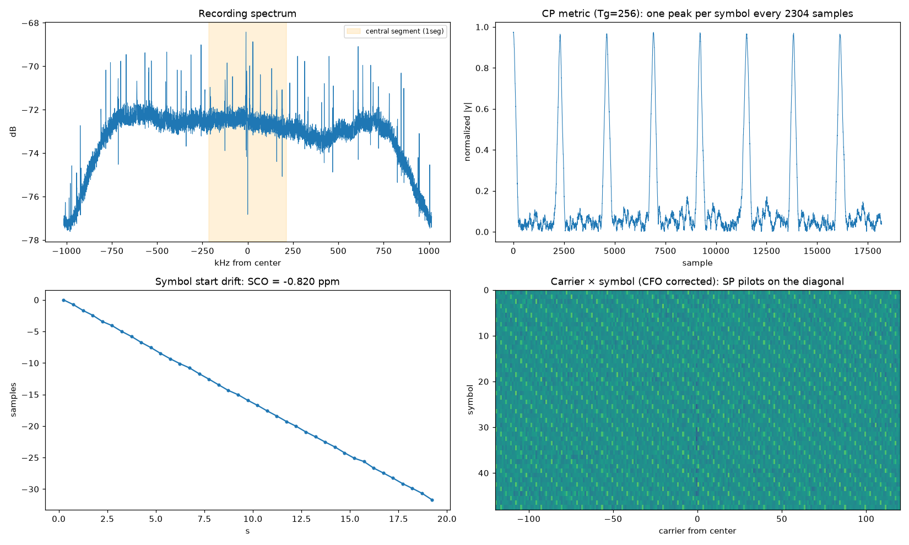

5. ISDB-Tb recording of channel 29 for FPGA development
A real, validated IQ recording of the center of UHF channel 29, to use as a reference model in Python and as test vectors in an HDL testbench (an ISDB-T project on the HuMANDATA EDA-009).
The recording
| Parameter | Value |
|---|---|
| File | grabaciones/isdbt/20261002_192250_uhf29_563142857Hz_2031746sps_g0.9.cu8 (81 MB) |
| Date | 2026-10-02 22:22:50 UTC (19:22 Chile time), Santiago, indoor dipole |
| Center frequency | 563.142857 MHz: the signal center of channel 29 (560 + 3 + 1/7 MHz) |
| Sample rate | 2,031,746 S/s = (512/63 MHz)/4. Actual: 2,031,746.004 Hz |
| Duration | 20 s (19.9 s usable; the first 100 ms are discarded) |
| Gain | 0.9 dB (the R820T's lowest manual gain) |
| Format | cu8: interleaved I, Q, uint8 with zero at 127.5 |
| Level | rms ~28 counts per component, clipping 0.0003% (~13 dB of headroom for the OFDM PAPR) |
Why that sample rate: it is exactly ¼ of the ISDB-T elementary rate (512/63 MHz = 8.12698 MHz). That way, the useful part of a Mode 3 symbol lasts 2048 samples and the carrier spacing stays at its real value of 992.06 Hz. A 2048-point FFT over the recording is equivalent to the 2048 central carriers of the full receiver's 8192-point FFT.
Measured parameters (tools/analizar_ofdm.py)
| Parameter | Result | How it was obtained |
|---|---|---|
| Mode | Mode 3 (Tu = 2048 samples = 1.008 ms) | CP correlation peaks with Tu = 2048 |
| Guard interval | 1/8 (Tg = 256, symbol = 2304 samples = 1.134 ms) | CP peak sharpness: 16.4 versus ~1.1 for 1/4, 1/16 and 1/32 |
| Symbol start | CP at sample 3 (mod 2304); FFT from 243 | Peak of the CP metric, with 16 samples of margin inside the CP |
| Clock error (SCO) | −0.820 ppm: the dongle samples slow | Linear drift of the peak: −1.667 samples/s over 20 s |
| Fractional CFO | −0.323 carriers = −320.5 Hz | Phase of the CP peak |
| Integer CFO | +1 carrier | SP pilots in class k ≡ 1 (mod 3). Matches what the SCO predicts |
| Total CFO | +671.6 Hz (+1.19 ppm) | Fractional + integer |
| Scattered pilots | Advance 3 carriers per symbol in 100% of the symbols | Confirms sync and coherent modulation (QPSK/QAM) |

How to read the plot:
- Top left, the spectrum. It is flat across the central ~1.6 MHz and drops at the edges because of the dongle's filter. The thin peaks are continual pilots and TMCC/AC carriers, which are transmitted at higher power. The orange band marks the 1seg segment.
- Top right, the CP metric. There is a peak of ~0.97 per symbol: the SNR is very high.
- Bottom left, the drift of the symbol start. It is a perfect straight line, and the SCO comes from its slope.
- Bottom right, the carrier × symbol grid with the CFO corrected. The diagonals are the SP pilots, which advance 3 carriers per symbol.
About the 210 Hz difference between the measured CFO (+671.6 Hz) and the one predicted by the SCO (+462 Hz): the most likely cause is the tuner's PLL step or a transmitter error. It does not affect development, because the receiver estimates the CFO anyway.
Repeating the recording (step by step)
- Close SDR# and SDR++.
-
Choose the gain. Record 1 second at several gains and measure the level. The target is an rms of ~25–35 counts and clipping below 0.01%.
Watch out: in
rtl_sdr,-g 0means automatic gain, not 0 dB. The R820T's lowest manual gain is-g 0.9. Inrtl_power, on the other hand,-g 0really is 0 dB manual.Channel 29 is so strong that even at 2.7 dB it clips 0.17%:
Gain rms (counts) Clipping 0.9 dB 28.8 0.0006% 1.4 dB 33.4 0.0068% 2.7 dB 42.6 0.17% 3.7 dB 52.1 1.0% -
Record. This line is PowerShell. For another channel n, the frequency is
(470 + 6·(n−14) + 3 + 1/7)·1e6Hz.drivers\rtlsdrblog-V1.4.0\x64\rtl_sdr.exe -f 563142857 -s 2031746 -g 0.9 -n 40634920 grabaciones\isdbt\canal29.cu8-nis the number of samples: 2,031,746 × 20 s. -
Validate and estimate the parameters:
python tools/analizar_ofdm.py grabaciones/isdbt/canal29.cu8
Using the recording in Python
import numpy as np
raw = np.fromfile("grabaciones/isdbt/....cu8", dtype=np.uint8).astype(np.float32)
x = ((raw[0::2] - 127.5) + 1j * (raw[1::2] - 127.5)) / 127.5
x = x[int(0.1 * 2031746):] # same discard as analizar_ofdm.py
t = np.arange(len(x))
x *= np.exp(-2j * np.pi * 671.6 / 2031746 * t) # correct the CFO
symbol0 = np.fft.fftshift(np.fft.fft(x[243:243 + 2048])) # first symbol, central carriers
For long segments you also need to correct the SCO (−0.82 ppm, about 33 samples of drift in 20 s): advance the FFT start by one sample every ~0.6 s, or resample the signal.
HDL testbench vectors (tools/cu8_a_hex.py)
python tools/cu8_a_hex.py grabaciones/isdbt/ARCHIVO.cu8 --inicio 3 --simbolos 8
- What it creates: a
.hexfile with one 16-bit sample per line,IIQQ, with 8-bit I and Q in two's complement.--inicio 3makes the file start exactly at the CP of a symbol. - File already generated:
..._ini3_8sim.hex, with 18,432 samples (8 symbols). Verified: the CP correlation is 0.96–0.97 for every symbol.
reg [15:0] mem [0:18431];
initial $readmemh("..._ini3_8sim.hex", mem);
wire signed [7:0] i_s = mem[n][15:8];
wire signed [7:0] q_s = mem[n][7:0];
Test ideas for the HDL:
- CP correlator: it should peak every 2304 samples, at positions 0, 2304, 4608...
- 2048-point FFT from sample 240 (3 + 256 − 16, counting from the start of the
.hex). Compare it withnp.fft.fftover the same window. The CFO must be corrected first, or in the HDL with an NCO. - SP detector: after the FFT, the highest-power carriers should advance 3 positions per symbol.
Possible next steps
- Decode the TMCC to learn each layer's modulation, convolutional code and interleaving. That requires locating the TMCC carriers using the ARIB STD-B31 tables.
- Equalize with the SPs and look at the constellation of the central segment (1seg, QPSK).
- Record several channels to get vectors under different multipath conditions. Channel 50, for example, had a tilted plateau.